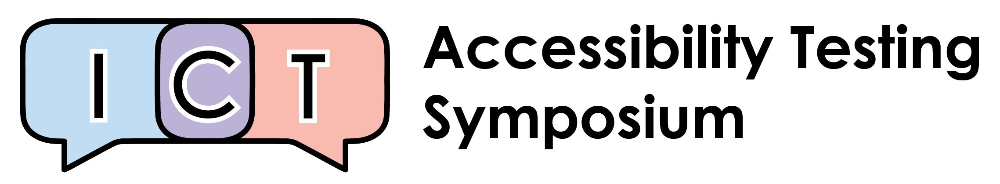
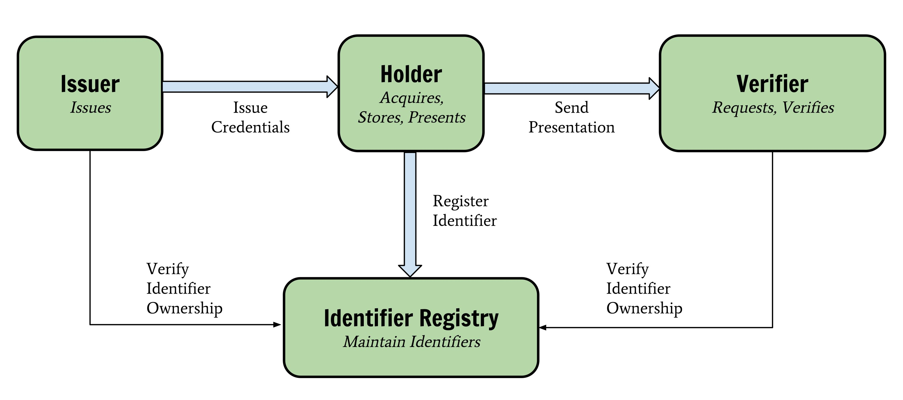
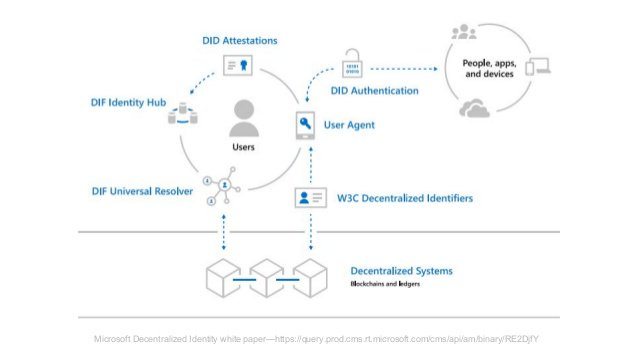

November@w3c: meetings, talks, conferences, etc. https://www.w3.org/participate/eventscal.html

Nov 7-8: the @wai team participates in the 2018 ICT Accessibility Testing Symposium @A11yTesting18 in #Arlington 🇺🇸 https://www.ictaccessibilitytesting.org/ #a11y #accessibility
https://twitter.com/w3cdevs/status/1059454221915951105Nov 8: @ibjacobs speaks at @w3c and FortuneTimesNYC's SymposiumX on financial innovation on the Web thanks to @w3payments , in #NewYork 🇺🇸 https://www.eventbrite.com/e/symposiumx-financial-innovation-on-the-web-tickets-49402053873
https://twitter.com/w3cdevs/status/1059454226856853510Nov 15: @dontcallmeDOM presents #Web5G: Aligning Evolutions of Network and #Web Technologies in #Berlin 🇩🇪 during @fraunhoferfokus 's FUSECO forum as part of #Berlin5GWeek https://www.fokus.fraunhofer.de/day-1-e37144786b024dd0#Panel-a3ebb51c
https://twitter.com/w3cdevs/status/1059454232896643072Nov 12-16: the @w3c_systeam organizes its annual #f2fmeeting in #SophiaAntipolis 🇫🇷.
On the menu: #github integration, modern tooling and infrastructure upgrades. https://github.com/w3c/modern-tooling/
https://twitter.com/w3cdevs/status/1059454231256711168Nov 17: The Chinese Web Interest Group meets in Hangzhou 🇨🇳
https://github.com/w3c/chinese-ig/blob/master/meetings/2018-11-17.md
Nov. 15: @jeff_jaffe presents @w3cx's global impact at the @edXOnline Global Forum, in Boston 🇺🇸 https://globalforum.edx.org/

https://twitter.com/w3cdevs/status/1059466762150969344https://twitter.com/w3c/status/1059804339047407616
https://twitter.com/w3cdevs/status/1059804536662036482https://twitter.com/w3c/status/1059803971307618305
https://twitter.com/w3cdevs/status/1059804535324098560#WebPayments from @w3payments https://twitter.com/w3cdevs/status/987306196708274176
https://twitter.com/w3cdevs/status/1061972977120673794The scope for the #W3CWorkshop includes alignment between several relevant efforts in this space:
#WebAuthn https://twitter.com/w3cdevs/status/997371997620506624
Friday this week (Nov 16 🗓️) is the last day to apply to participate to the @w3c workshop on Strong #Authentication and #Identity https://www.w3.org/Security/strong-authentication-and-identity-workshop/cfp.html
https://twitter.com/w3c/status/1048204859781124096
https://twitter.com/w3cdevs/status/1061972975690366978Verifiable Credentials - the work from the Verifiable Claims Working Group aims at a providing mechanism to express credentials such as driver's licenses or university degrees on the Web in a way that is secure, privacy respecting, and machine verifiable https://w3c.github.io/vc-data-model/
https://twitter.com/w3cdevs/status/1061972978475433984Decentralized identifiers aims at building identifiers without central authority - a key component of so called "self-sovereign identity" #ssi, i.e. lifetime portable identity for any person, org or thing that doesn't depend on any centralized authority and can't be taken away
https://twitter.com/w3cdevs/status/1061972985731563520Most notably among its work items, the work on Decentralized Identifiers #DID is expected to be under the spotlight at the workshop https://w3c-ccg.github.io/did-spec/
https://twitter.com/w3cdevs/status/1061972983831556097In addition to this existing ongoing @w3c standardization efforts, it will also be looking at technologies under incubation in in the Credentials #CommunityGroup
https://www.w3.org/community/credentials/
https://twitter.com/w3cdevs/status/1061972982044786688The workshop itself will happen on Dec 10-11 in #Seattle 🇺🇸 hosted by @microsoft @AzureAD https://twitter.com/azuread/status/1050425095003369472
https://twitter.com/w3cdevs/status/1061972989112184834Of course, a lot of relevant work in this space happens in other organizations and communities: @ietf, @isostandards, @openidconnect, @oauth_2, @OASISopen with #SAML which we hope to see represented there
https://twitter.com/w3cdevs/status/1061972987941998593So, if you have something to contribute to this conversation, you just have a few days left (until Friday Nov 16 🗓️) to apply - don't miss it!
https://twitter.com/w3cdevs/status/1061972990450196480The @w3c ARIA Working Group has been rechartered for 3 more years, to continue its work on #WAI_ARIA and its mappings to native host languages https://www.w3.org/2018/11/aria-charter https://twitter.com/w3c/status/1060972362370351105
The more detailed roadmap https://www.w3.org/WAI/ARIA/roadmap of the group includes:
* achieving parity with native host language semantics
* providing support for the #accessibility Object Model https://twitter.com/w3cdevs/status/959464445423517697
https://twitter.com/w3cdevs/status/1061999698649726976* developing and maintaining additional #WAI_ARIA features for authors and end users
* ensuring consistency in platform #accessibility API Mappings
https://twitter.com/w3cdevs/status/1061999701568950272No implementation yet, but @GoogleChromeDev has ongoing work on it https://bugs.chromium.org/p/chromium/issues/detail?id=805271
https://twitter.com/w3cdevs/status/1063035901243219968For instance, an <hello-wolrd> component defined with
<template>Hello <span part=name>World</span></template>
could be styled in a page using the compenent with
hello-world::part(name) { color: red;}
#CSS Shadow Parts brings a new CSS selector (::part()) to enable stylistic customization of Web components: #WebComponents creators get to identify which part of the Shadow DOM they create can have their style customized in the hosting page.
https://www.w3.org/TR/css-shadow-parts-1/ https://twitter.com/w3c/status/1063014804317749249
https://twitter.com/w3cdevs/status/1063035899842322432As usual, the editors draft https://drafts.csswg.org/css-shadow-parts/ is maintained in github in the @csswg repository of specs where issues and feedback can be brought https://github.com/w3c/csswg-drafts/tree/master/css-shadow-parts-1
https://twitter.com/w3cdevs/status/1063035903269052416If you want a blue beanie to show your support of #webstandards and #a11y on #BlueBeanieDay, you can get a @w3c one at https://shop.spreadshirt.fr/w3cshop/w3cbluebeanie-A13465468?size=29

https://twitter.com/w3cdevs/status/1068523214198853637